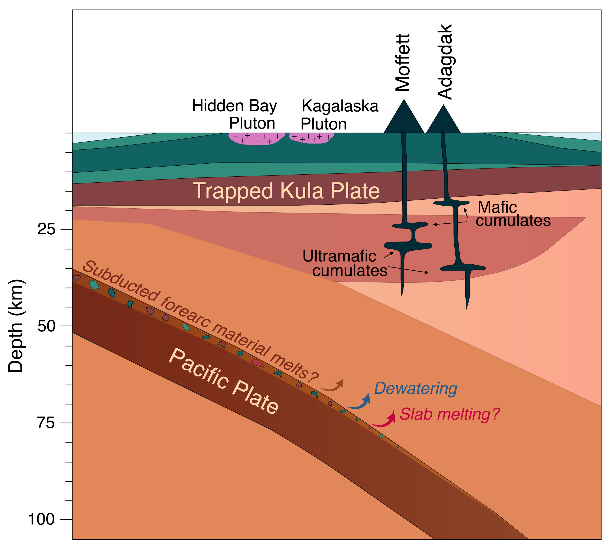
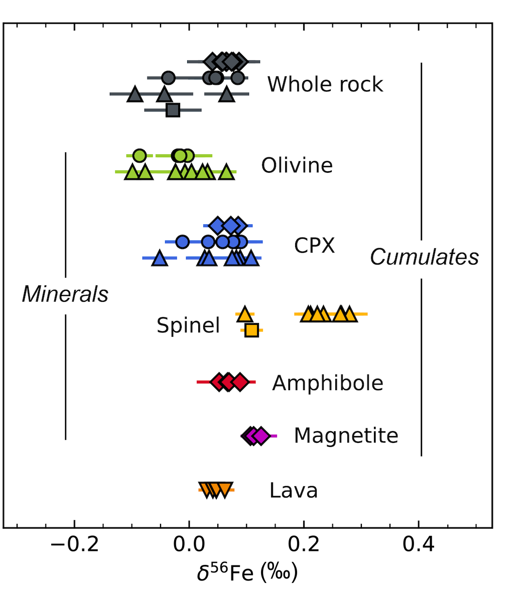
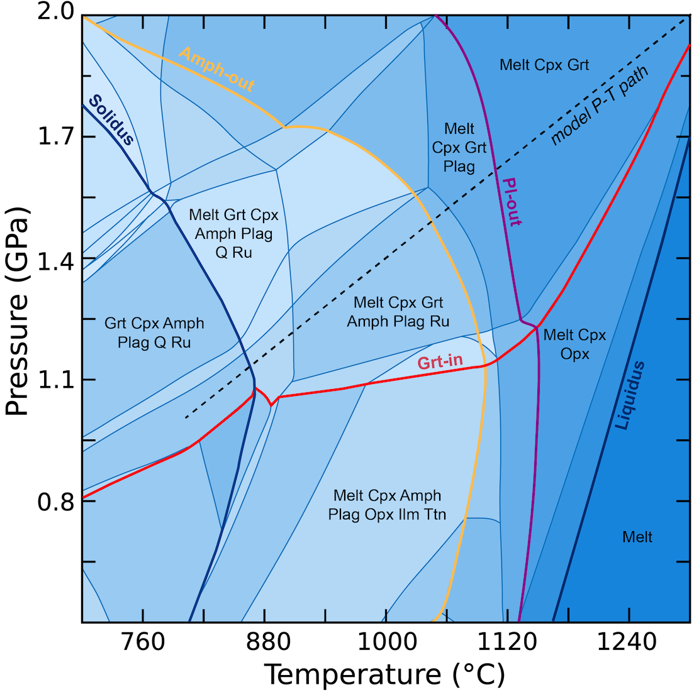

1. Petrography and geochemistry of Adak Island xenoliths
For the first chapter of my thesis, I document 39 previously undescribed xenoliths from the Mt. Moffett and Mt. Adagdak volcanic centers on Adak Island, Central Aleutians. The island is well-known to geologists for being the inspiration for the term adakite: an igneous rock type characterized by fractionate rare earth element patterns attributed to the presence of an endmember component derived from partial melting of subducted oceanic crust. These xenoliths were collected in the 1970s and graciously loaned to my research group by Sue and Robert Kay from Cornell University. Cumulate xenoliths from both volcanic centers range from primitive dunite and pyroxenite to more evolved amphibole gabbro and hornblendite lithologies. This chapter reports in-situ major element mineral chemistry measurements for olivine, spinel, pyroxene, amphibole, and plagioclase, and trace element mineral chemistry for pyroxene, amphibole, and plagioclase. I used this data to evaluate the P-T-fO2-H2O conditions under which the cumulates formed, interrogate the nature of their parental melt, and explore the complex magmatic plumbing system beneath Adak Island. The oxybarometry and thermometry, in particular, relied on olivine-spinel mineral equilibria and spinel Fe+2/ΣFe ratios. Interestingly, we observed the same trace element signatures characteristic of adakites in clinopyroxene from the most primitive cumulates but not in minerals from the more evolved lithologies, suggesting that low-degree basaltic eclogite melts contributed to the parental magmas of the most primitive Adak cumulates with these geochemical signatures later being obscured by differentiation in the crust. This work was published in JoP in 2024.

2. Fe isotope systematics of Adagdak xenoliths
Following my initial work with spinel Fe+2/ΣFe ratios, I became interested in investigating other ways in which the multivalent nature of Fe could be leveraged to understand changes in magmatic oxidation state. Specifically, the remainder of my thesis aimed to explore how stable Fe isotope ratios (expressed in δ56Fe notation, where δ56Fesample = 1000 × [(56Fe/54Fe)sample/(56Fe/54Fe)standard – 1]) can be used to study changes in oxygen fugacity. Fe isotope ratios hold particular promise for deciphering the effects of oxygen fugacity and differentiation on arc magmas due to the preferences of important rock-forming minerals (e.g., garnet, olivine, pyroxene, amphibole, magnetite) for heavy vs. light isotopes of Fe. This preference arises from the affinity of isotopically light 54Fe for the reduced Fe+2 valence state and the complementary affinity of heavy Fe isotope species (56Fe, 57Fe, and 58Fe) for the oxidized Fe+3 valence state in both melts and minerals.
For the second chapter of my thesis, I built upon my previous work and measured Fe isotope ratios of Fe-bearing mineral separates (spinel, clinopyroxene, olivine, amphibole, and magnetite) and whole-rock powders for the Adagdak xenoliths. While my data did not reveal evolutionary trends in δ56Fe for specific minerals, or the correlations between δ56Fe and fO2 that I had predicted, I did observe dramatic changes in whole-rock δ56Fe between the most primitive dunite cumulates and the more evolved amphibole-bearing samples, with the former being isotopically lighter than the latter. Through mass-balance modeling, I showed that convergent margin magmas may experience periods of enrichment as isotopically light phases like olivine are fractionated (represented by the dunite cumulates, for example), followed by isotopic depletion once heavy phases like amphibole and magnetite saturate and begin to control the Fe budget of the system (e.g., amphibole gabbro and hornblende cumulates). These results point to an important crustal control in the isotopic evolution of Adagdak magmas and their crystallization products, with the increases in whole-rock δ56Fe observed between lower and mid to upper-crustal lithologies reflecting a shift from fractionation dominated by isotopically light to isotopically heavy cumulate assemblages. This project was presented at the Goldschmidt annual conference in Honolulu, Hawaii, in 2022 and published in GCA in 2024.

3. Fe isotope systematics of Mercaderes xenoliths
A natural extension to this last project would be a detailed petrographic and geochemical study of a lower to mid-crustal xenolith suite from a thick, continental arc setting, which is the subject of the final chapter of my thesis. Here, I interrogate the petrography, mineral and whole-rock major and trace element chemistry, and Fe isotope systematics of a xenolith suite from the Mercaderes region of the Colombian Andes to explore the evolution and structure of a thickened arc crust. These specific samples were collected and initially documented by my collaborator, Andres Rodriguez-Vargas, in the early 2000s. While early work in the late 1990s initially interpreted the Mercaderes suite as a prograde metamorphic sequence of mid-crustal diorite protoliths, the suite was later reinterpreted to represent igneous garnet clinopyroxenite cumulates formed at the base of the Andean crust formed from primitive arc magmas.
In this last chapter, I measured Fe isotope ratios of whole-rock powders and mineral separates of amphibole, clinopyroxene, and garnet from a selection of Mercaderes xenoliths ranging in lithology from lower-crustal garnet clinopyroxenite to amphibole-rich mid/upper-crustal diorite. Given the prevailing theory that the Mercaderes suite represented a fractional crystallization sequence, I expected to see the same isotopic stratification of the crustal section I measured in the Adagdak xenolith suite, except this time with isotopically light garnet clinopyroxenite from the lower-crust and isotopically heavy diorite from the mid/upper-crust. However, I measured surprisingly little variability in Fe isotope ratios across the entire crustal section, implying a near-constant δ56Fe from ~70 to 20 km below the surface. Through Perple_X modeling, I show these data are more consistent with the Mercaderes suite forming through amphibole dehydration reactions as mid/upper-crustal diorite protoliths are metamorphosed to lower-crustal garnet clinopyroxenite assemblages. This paper was published in EPSL in 2024.